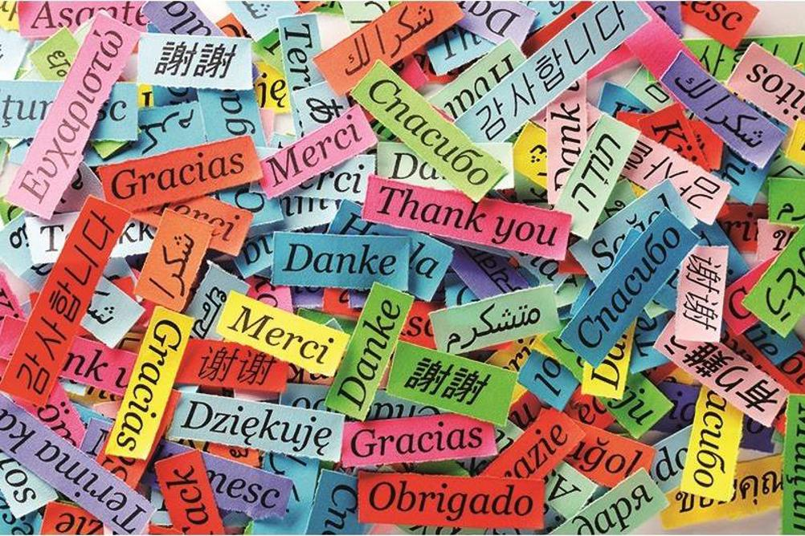

Studiare le lingue straniere per me è molto più che
imparare parole nuove: è un modo per conoscere il mondo. Al momento sto studiando inglese,
una lingua che ormai fa parte della nostra quotidianità, dalla musica ai film, dalla scuola ai social.
’inglese, infatti, non è solo la lingua “internazionale” per eccellenza, ma anche la chiave per accedere a tantissimi contenuti, storie e persone.
Parlare inglese mi fa sentire più libera, con più possibilità di parlare con il mondo
Mi piacerebbe imparare anche il coreano e il tedesco.
Il coreano mi affascina per la sua sonorità, per la cultura che rappresenta, dai K-drama alla musica KPOP,
e per la sua scrittura così diversa dalla nostra, ma incredibilmente affascinante.
Il tedesco, invece, mi attira per la sua precisione, per la struttura logica e per la ricchezza culturale
dei Paesi in cui è parlato.Imparare una lingua, per me, è un viaggio. Non solo linguistico, ma anche umano e culturale.
È aprire la mente, allenare la pazienza, imparare a osservare e ascoltare in modo diverso,
ma soprattutto è anche un modo per avvicinarmi agli altri.